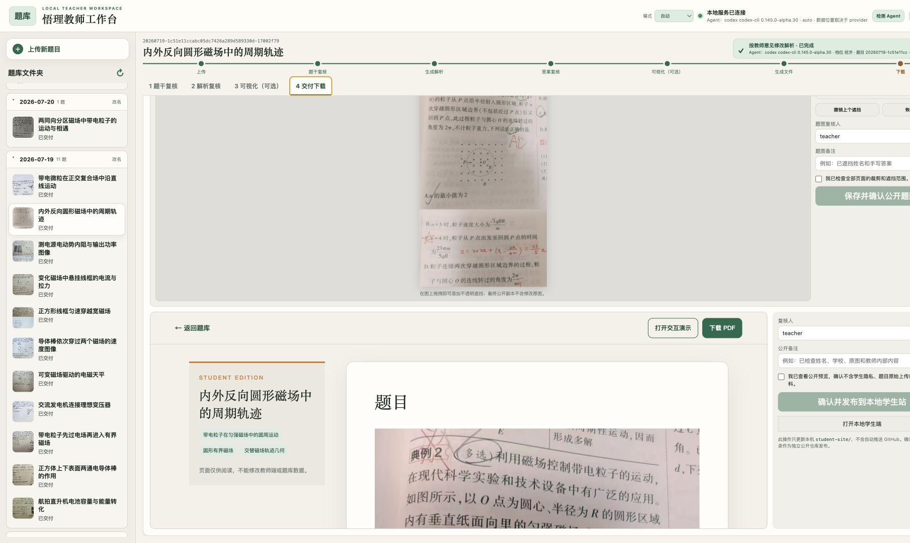
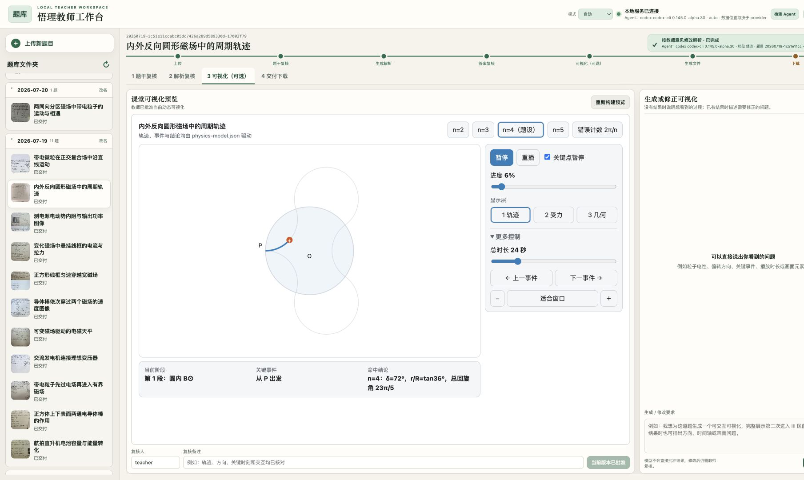
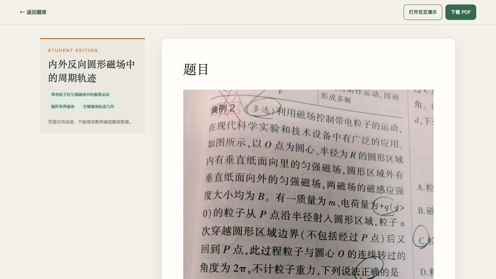

01 · LOCAL FIRST
本地优先
OCR、文件摘要去重和知识检索尽可能留在本机，减少不必要的远程调用。
悟理不把“模型生成了内容”等同于“内容已经可信”。题干、答案和动态仿真分别经过复核；任何关键内容变化都会让旧批准失效。
OCR、文件摘要去重和知识检索尽可能留在本机，减少不必要的远程调用。
Agent 只接收白名单内、经过裁剪的必要上下文，不能自行批准或发布结果。
教师确认后的讲法、PDF 和离线仿真沉淀为可检索、可重复使用的校本资源。
以下画面来自当前可运行 MVP，而非概念效果图。



把有限的算力用在真正需要生成与判断的地方，把教师经验转化为可以持续复用的乡村教育基础设施。